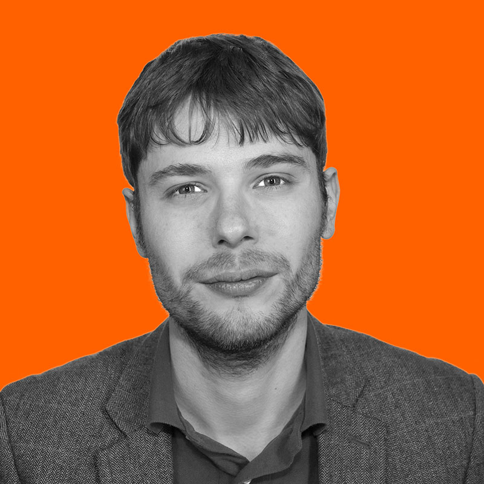

Keynotes
Simon Powers
Abstract
The functioning of human societies fundamentally relies on social forces, in particular cooperation in the exchange of resources and the solution of collective action problems. Scholars mostly agree evolutionary processes have selected for cooperation in our ancestral small-scale hunter-gatherer societies. However, there is still much controversy about which behavioural mechanisms maintain cooperation in large-scale societies. Are the same mechanisms at work, or is some new mechanism needed? Confusion over this has frustrated our understanding of one of the most pressing questions in both evolutionary biology and the social sciences -- how could large-scale societies ever have arisen? To address this, we first examine how, if at all, cooperation in large-scale societies is actually different to cooperation in small-scale societies. We then examine the possible behavioural mechanisms that could produce this cooperation. We stress that the behavioural mechanisms themselves could not plausibly have changed between small- and large-scale societies. Finally, we use the framework of behavioural mechanisms to review the most common hypothesis that has been proposed for the origin of large-scale societies: cultural group selection. We show that this relies on behavioural mechanisms that are incompatible with most of evolutionary biology and the social sciences. As a result, we introduce an alternative explanation for large-scale societies -- the institutional path hypothesis. Crucially, this relies only on behavioural mechanisms that are are compatible with evolutionary theory, behavioural ecology, economics and political science. We therefore suggest that this represents a more parsimonious alternative for why large-scale societies work.
Bio
My current research interests involve modelling social interactions using analytical and agent-based models. I approach this both from the perspective of economics, and by using evolutionary algorithms to model the spread of culturally-transmitted behaviours (social learning) in populations. I am particularly interested in the processes by which social institutions in human groups evolve over time, and on the conditions under which institutions can promote cooperation in large-scale groups of self-interested agents. I also maintain interests in applying artificial immune systems to intrusion detection, and in neural networks for both machine learning and as models of behaviour. I previously held postdoctoral positions with Prof. Laurent Lehmann at the Department of Ecology & Evolution, University of Lausanne, and with Dr. Joanna Bryson at the Department of Computer Science, University of Bath. My Ph.D. thesis is titled "Social niche construction: Evolutionary explanations for cooperative group formation", and was supervised by Prof. Richard Watson at the School of Electronics & Computer Science, University of Southampton.